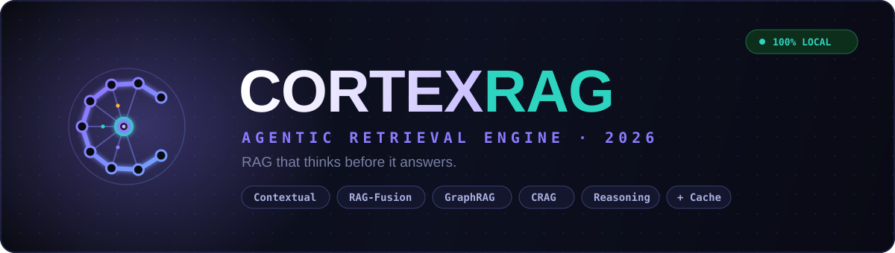

Answers your
CTO auditors
will trust.
Cortex turns scattered enterprise data into cited, permission-aware answers. No hallucinations. No black boxes. Just receipts.

Your knowledge is everywhere.
Your answers are nowhere.
Every team has the truth buried in its data. Most can't find it fast enough — or trust it when they do.
Knowledge lives everywhere.
SOPs in Drive. Policies in Confluence. Tribal knowledge in Slack DMs. No single source of truth — and no way to search across all of it.
Generic AI hallucinates.
Off-the-shelf LLMs invent things. Without grounding in your actual documents, every answer becomes a liability — especially when regulators are watching.
No traceability.
When an employee acts on wrong information, you can't trace where it came from. Compliance teams have zero visibility into AI-generated answers.
Enterprise AI takes months. By then, the question changed.
Procurement. Integration. Fine-tuning. Endless RFPs. Cortex ships in 14 days because it has to.
Built for teams who can't
afford to guess.
Every feature exists to reduce risk and increase trust. Not impress at a demo.
Multi-source connectors
Documents, databases, SharePoint, Notion, Confluence, internal APIs. Your data stays put — we reach in.
Every answer cited
Document, page, section. Teams know exactly where the answer came from. No more "trust me, bro."
Permission-aware
Retrieval respects document-level ACLs. Users only see answers from content they're authorized to access.
Full audit trails
Every query, retrieval, and response logged. Compliance gets receipts. Auditors get answers.
Built-in evaluation
Measure accuracy, hallucination rates, latency — out of the box. Know how your assistant is actually performing.
Ships in days
Open-source core. No lock-in. Custom enterprise deployment at a fraction of the closed-source price.
Most RAG stops at step 1.
We stack nine layers.
Generic RAG = embed + retrieve + generate. One bad chunk, one wrong answer. Cortex chains nine precision techniques so every layer catches what the last one missed.
Contextual Retrieval
Chunks carry document context before indexing — so the model knows where a passage sits, not just what it says. Cold chunks cause cold answers.
RAG-Fusion + RRF
Multi-query rewriting generates parallel question variants. Reciprocal Rank Fusion merges results by relevance — catching documents a single query would miss.
GraphRAG
Entity relationships are modelled as a knowledge graph. Connected facts that vector search misses — cross-document reasoning, entity disambiguation — surface naturally.
Corrective RAG (CRAG)
An LLM grades every retrieved chunk for relevance before generation. Low-confidence chunks are dropped or web-supplemented. Hallucinations die here.
Neural Reranking
A CrossEncoder scores every (query, passage) pair on true semantic relevance — not just embedding similarity. The best chunks rise. The noise sinks.
HyDE
Hypothetical Document Embeddings generate an ideal answer first, then retrieve against it. Sparse or vague queries find rich results they'd otherwise miss completely.
Semantic Cache
Semantically similar questions skip retrieval entirely. First answer: <200ms. Repeat questions: 0ms. Users feel the difference. Bills feel it too.
Live Reasoning
Watch the model think through documents in real time. Every retrieval step, every chunk scored, every decision — visible. No black box. Full audit trail.
Chat Memory
Multi-turn conversations work naturally. Context carries across questions — follow-ups, clarifications, and thread continuations all reference earlier exchanges.
Teams drowning in docs.
Starving for answers.
Customer success teams burning hours on FAQ archaeology.
Your agents answer the same questions from scattered docs. Cortex gives them cited answers in 2 seconds — cutting escalations and handle time.
Process teams who need to prove which SOP was followed.
Procedures scattered across systems. Audits demand traceability. Cortex surfaces the right policy with a citation, every time.
Regulated orgs who need AI without the legal-team migraine.
Every answer needs a traceable source. Cortex gives you AI-powered search with the audit trail compliance demands — without the enterprise price tag.
Firms building client AI products without reinventing RAG.
Deliver knowledge assistants per client without rebuilding from scratch. Cortex is your open-source foundation, deployable in a week.
From data to trusted answers
in three steps.
Connect your knowledge
We integrate with your existing systems — documents, databases, internal tools. No migration. No restructuring. Your data stays where it is.
Configure retrieval rules
Set permission boundaries, define access roles, tune retrieval accuracy. We handle configuration with you in week one.
Deploy and measure
Go live with your knowledge assistant. Monitor accuracy, run evaluations, iterate — full observability from day one.
Built in the open.
Deployed for your enterprise.
No black boxes. No hidden logic. Audit every retrieval step. Enterprise deployment, customization, and support at a fraction of closed-source alternatives.
Explore on GitHub ↗Ready to build yours?
We build enterprise RAG at low cost for teams ready to make their knowledge actually useful.
REQUEST A PILOT →